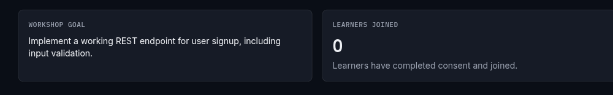
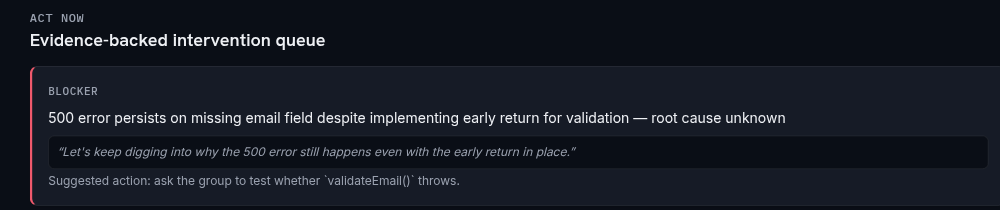
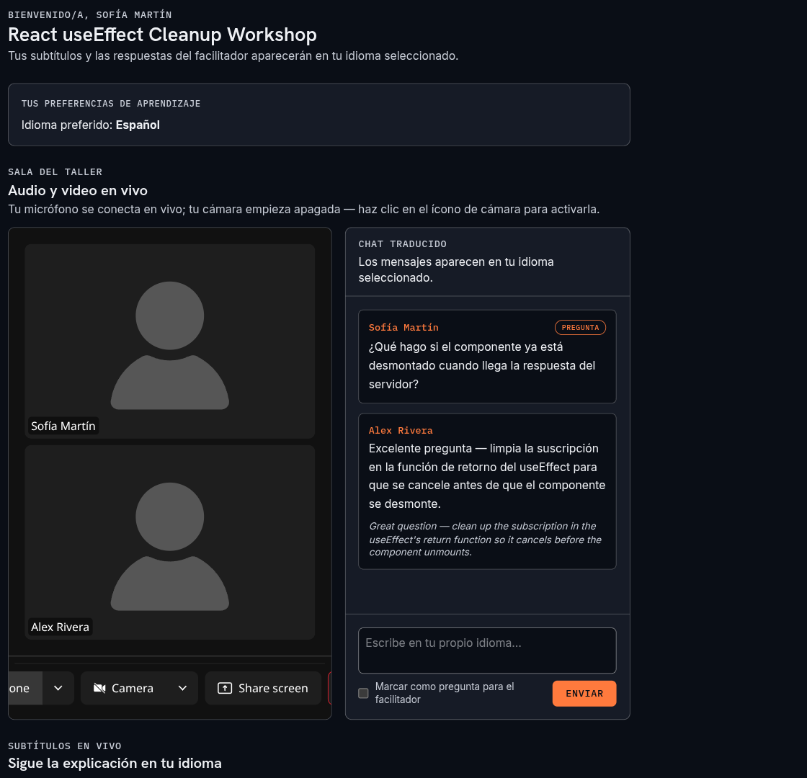
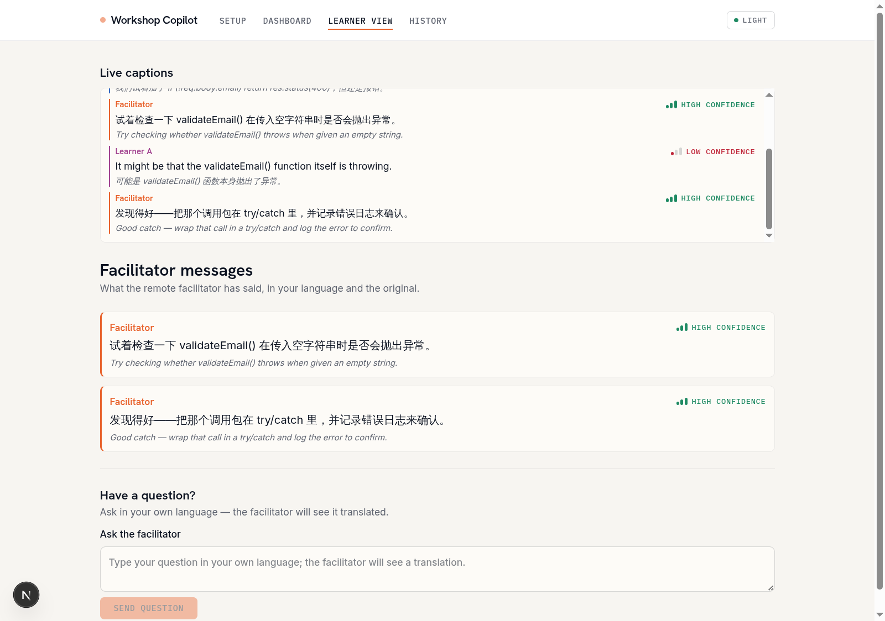
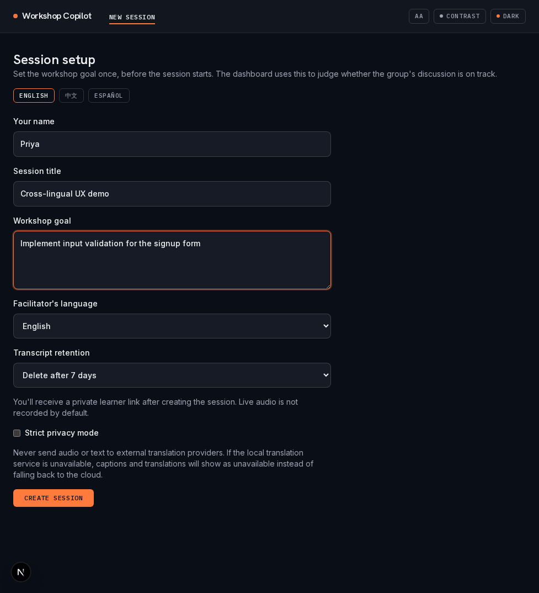
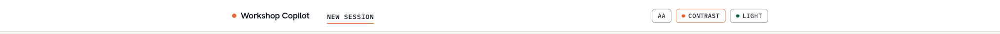

A lost learner stays quiet when facilitator and learner don't share a language — until the moment to help is gone.
No one typed these — Claude pulls goal, decisions, and blockers live from the transcript, cited to the line.


Scan a QR code, no account — captions, questions, and replies translate round-trip, every screen fully localized.

Confidence-scored captions, full accessibility controls, and privacy set up front — audio never recorded by default.



The quiet learner is now a card on the dashboard.
Real sessions, real tokens, real i18n — not a slide.
A citation guardrail on APIs we can call today.
Thank you — no one gets left behind in their own workshop.